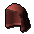
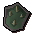
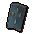
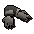

")
Fist of Guthix
Introduction | Location | Requirements | Getting Started | Hunting and being Hunted | Rewards | Development Team
Fist of Guthix is available to all players, but some rewards are only accessible to RuneScape Members. Please subscribe to get this feature.
Please note this is a 'Safe' activity. If you die while playing Fist of Guthix you will not lose any items.
You should be aware, however, of the danger of revenants attacking while you travel to the Fist of Guthix entrance.
Introduction

Fist of Guthix is a combat-based activity that pits you against a single opponent in a battle of cunning, speed and sheer determination. The rewards are great for those who can both hunt their enemy and evade that same enemy in turn...
Location

To find your way to the caves from Varrock, simply follow the road north out of the city and into the Wilderness. As it begins to turn to the east, continue walking directly north and you should soon find the cave entrance.
Having said this, the Wilderness is a dangerous region populated by terrifying revenants. If you're heading to the Fist of Guthix, be prepared to fight these vicious beasts.
Requirements
There are no specific requirements to play Fist of Guthix, just a tactical mind and possibly some handy equipment:
 |
Armour Because Fist of Guthix is combat-based, you'll find it useful to bring some sort of armour with you. Be aware, though, that you'll be running around an awful lot, so heavy plate armour might not be the best choice. |
||||
 |
Weapon It will be hard to come out on top armed only with your fists, so make sure you bring a weapon of some sort! Any missile ammunition you use will be replaced when you leave the activity and runes will be supplied for your use, though, so don't worry about their cost. |
Getting Started
 To begin playing Fist of Guthix, you must first speak to Fiara, guardian of this holy site. You shouldn't find it terribly difficult to spot her, as she is, quite obviously, a giant earwig... thing. If you can't see her, you'll find her in an alcove at the eastern end of the cave.
To begin playing Fist of Guthix, you must first speak to Fiara, guardian of this holy site. You shouldn't find it terribly difficult to spot her, as she is, quite obviously, a giant earwig... thing. If you can't see her, you'll find her in an alcove at the eastern end of the cave.
Fiara, aside from explaining that she doesn't much like the druids, will explain how to play Fist of Guthix, which you can also read about below.
While you are in the cave, you may also discover that a bar appears at the bottom of the game window telling you that an item you are carrying is not permitted when playing Fist of Guthix. Conveniently for you, there is a wandering banker available in the central area of this cave, so you can quickly drop off any items you might be carrying that you cannot use in the arena.
Having spoken to Fiara and dropped off any items you're not allowed to carry in the arena, you will be ready to face your enemy at the Fist of Guthix! Head over to the cave entrance next to Fiara and prepare for the competition!
Hunting and being Hunted
When you enter the arena, you will be automatically paired up with another player, whose name will appear in a box in the top-right corner of your game screen. There will be a brief countdown, and then one of you will be designated the hunter and the other will be the hunted. Because Fist of Guthix is a two-round activity, you will swap roles with your opponent at the end of the round.
- If you are the hunter, your task is simply to track down and slay your opponent.
- If you are the hunted, your task is to evade your opponent and gather as many charges from the Fist of Guthix as possible.
| Item | Purpose |
 |
5 Bandages Each bandage can be used to heal 150 life points. Because you cannot bring food or potions into the Fist of Guthix activity, this is one of the only ways to heal yourself. Use them wisely! |
 |
300 Catalytic runes Catalytic runes are a universal replacement for non-elemental runes, so you do not need to expend any of your own runes to cast spells. |
 |
1,000 Elemental runes Elemental runes are a universal replacement for fire, air, water and earth runes, so you do not need to expend any of your own runes to cast spells. |
 |
Tele-orb The teleport sphere can be used once to teleport you directly to the Fist of Guthix in the centre of the arena. |
You will receive these items when you first enter the arena, and none of them will be replenished when you swap roles with your opponent. You will discover that any Ranged ammunition you use in the arena will be returned to you when you exit (unless it is destroyed or used up, like bolt racks for Karil's crossbow), so you don't need to worry about picking up your arrows - that would only slow you down!
The Fist of Guthix arena is a large, roughly circular cavern with a few key locations within the otherwise empty space.

Stone Dispensers
If you are being hunted (as shown in the top right of your screen), you will need to carry a stone of power, which you can get by clicking on one of the stone dispensers. There are plenty of these around the arena, so you shouldn't find it too hard to get one. If you forget to pick one up, you will see a message in the bottom-right of your game window to remind you.
The Fist of Guthix
The Fist of Guthix is an ancient source of power that the druids are attempting to harness. If you are being hunted and trying to gather charges, you'll find that your stone of power gets greater charges the closer you are to the Fist of Guthix and that you get the most while standing on the Fist itself. Your run energy will also restore remarkably quickly while standing there, but you'll be easy for your opponent to find!
Portal Chambers
The portal chambers are strange rooms that you can only access if you are being hunted. You cannot gather charges while in these rooms, but while you are there you will be invisible to your opponent. You can also teleport to a random portal chamber by clicking on the portal in the middle of each room. Beware, though, because you will be slightly injured each time you pass through the energy barriers into a portal chamber and 20 charges will be removed from your stone each time you use the teleport portals. In addition to this, you will notice a faster damage rate for simply being the hunted.
After leaving a portal chamber, you will have to wait twenty seconds before you are able to enter again.
Collecting Charges
 To collect charges with your stone of power, you must be wielding it. Because it requires two hands to wield the stone and it cannot be used as a weapon, you will be unable to fight back while doing so.
To collect charges with your stone of power, you must be wielding it. Because it requires two hands to wield the stone and it cannot be used as a weapon, you will be unable to fight back while doing so.
In addition to this, you'll find that having such a vast quantity of energy flowing through the stone is a bit dangerous, and your statistics will gradually decrease the closer you get to the Fist of Guthix itself - you'll also find yourself taking damage from the raging power. The rate at which you take damage will increase while you are in a portal chamber. On top of this, the only spells you will be able to cast while being hunted are the Vengeance, Cure Poison and Dream spells from the Lunar spellbook. Any familiars you have out will have significantly reduced combat abilities.
Note: The duration of the Bind, Snare and Entangle spells is much lower in a game of Fist of Guthix.
In the unlikely event that you manage to kill your hunter, you will be displeased to discover that they simply respawn at the edge of the arena, ready to hunt you once again!
Winning the Game
After the two rounds have been played, you will both be returned to the entrance cave and one of you will be declared the winner based on who collected the most charges while being hunted.If your opponent logs out without completing the game, you will automatically be declared the winner and, if you have not yet collected any charges from the Fist of Guthix, you will be compensated with some free charges.
Charges and your total skill level relate directly to the number of tokens you receive as a prize, and these tokens can be used to buy some positively fantastic goods. To see what you might be able to buy, talk to the druid Reggie, who runs a small shop of sorts.
Note that you do not need to win a game of Fist of Guthix to earn tokens, you can earn a few simply by putting in a decent effort and surviving for a while.
Rewards
In addition to the tokens you win, you will also be given a rating, which you can compare to other players on the Hiscores table. You will need a rating of 500 to feature in the hiscores.
The items you can purchase using your tokens are detailed below. Note that none of these items are tradeable unless they are completely uncharged (if you want to trade, Reggie will be happy to uncharge them - simply use them on him). This means, of course, that any item that crumbles when it runs out of charges can only be gained by playing Fist of Guthix. Uncharged items have significantly reduced stats.
Druidic Mage Robes
While you are wearing a complete set of druidic mage robes, your Bind, Snare and Entangle spells will be more effective. These robes degrade over time in the same way as Barrows equipment, but can be recharged by paying Reggie a small quantity of tokens.
| Item | Levels Required |
||||||||||||||||||
| Attack Bonuses | Defence Bonuses | Other | |||||||||||||||||
![[Image: Stab]](../../img/main/kbase/table_text/stab1.gif "Stab") |
![[Image: Slash]](../../img/main/kbase/table_text/slash1.gif "Slash") |
![[Image: Crush]](../../img/main/kbase/table_text/crush1.gif "Crush") |
![[Image: Magic]](../../img/main/kbase/table_text/magic1.gif "Magic") |
![[Image: Range]](../../img/main/kbase/table_text/range1.gif "Range") |
|
|
|
|
|
![[Image: Summoning]](../../img/main/kbase/table_text/summoning1.gif "Summoning") |
![[Image: Strength]](../../img/main/kbase/table_text/strength1.gif "strength") |
![[Image: Prayer]](../../img/main/kbase/table_text/prayer1.gif "Prayer") |
|||||||
![[image]](../../img/main/kbase/minigames/hvh/druid_spellcaster_hood.gif) Druidic mage hood |
20 10 |
+ 0 | + 0 | + 0 | + 3 | + 0 | + 0 | + 0 | + 0 | + 3 | + 0 | + 3 | + 0 | + 0 | |||||
![[image]](../../img/main/kbase/minigames/hvh/druid_spellcaster_top.gif) Druidic mage top |
20 10 |
+ 0 | + 0 | + 0 | + 7 | + 0 | + 0 | + 0 | + 0 | + 7 | + 0 | + 7 | + 0 | + 0 | |||||
![[image]](../../img/main/kbase/minigames/hvh/druid_spellcaster_legs.gif) Druidic mage bottom |
20 10 |
+ 0 | + 0 | + 0 | + 6 | + 0 | + 0 | + 0 | + 0 | + 6 | + 0 | + 6 | + 0 | + 0 | |||||
Combat Robes
While you are wearing a complete set of combat robes, there is a chance of the robes supplying any mind, chaos, death or blood runes when casting a combat spell. These robes degrade over time in the same way as Barrows equipment, but can be recharged by paying Reggie a small quantity of tokens.
| Item | Levels Required |
||||||||||||||||||
| Attack Bonuses | Defence Bonuses | Other | |||||||||||||||||
|
|
|
|
|
|
|
|
|
|
|
|
|
|||||||
![[image]](../../img/main/kbase/minigames/hvh/combat_robe_hood.gif) Combat hood |
20 10 |
+ 0 | + 0 | + 0 | + 3 | + 0 | + 1 | + 1 | + 1 | + 3 | + 0 | + 4 | + 0 | + 0 | |||||
![[image]](../../img/main/kbase/minigames/hvh/combat_robe_top.gif) Combat robe top |
20 10 |
+ 0 | + 0 | + 0 | + 7 | + 0 | + 1 | + 1 | + 1 | + 7 | + 0 | + 8 | + 0 | + 0 | |||||
![[image]](../../img/main/kbase/minigames/hvh/combat_robe_legs.gif) Combat robe bottom |
20 10 |
+ 0 | + 0 | + 0 | + 6 | + 0 | + 1 | + 1 | + 1 | + 6 | + 0 | + 7 | + 0 | + 0 | |||||
Battle Robes (Members only)
While you are wearing a complete set of battle robes, there is a good chance that the robes will supply any mind, chaos, death or blood runes when casting a combat spell. These robes degrade over time in the same way as Barrows equipment, but can be recharged by paying Reggie a small quantity of tokens.
| Item | Levels Required |
||||||||||||||||||
| Attack Bonuses | Defence Bonuses | Other | |||||||||||||||||
|
|
|
|
|
|
|
|
|
|
|
|
|
|||||||
![[image]](../../img/main/kbase/minigames/hvh/enchanted_combat_hood.gif) Battle hood |
60 50 |
+ 0 | + 0 | + 0 | + 5 | + 0 | + 7 | + 6 | + 8 | + 5 | + 0 | + 8 | + 0 | + 0 | |||||
![[image]](../../img/main/kbase/minigames/hvh/enchanted_combat_top.gif) Battle robe top |
60 50 |
+ 0 | + 0 | + 0 | + 26 | + 0 | + 17 | + 15 | + 20 | + 26 | + 0 | + 30 | + 0 | + 0 | |||||
![[image]](../../img/main/kbase/minigames/hvh/enchanted_combat_legs.gif) Battle robe bottom |
60 50 |
+ 0 | + 0 | + 0 | + 20 | + 0 | + 14 | + 11 | + 16 | + 20 | + 0 | + 23 | + 0 | + 0 | |||||
Dragonhide Coifs
Dragonhide is among the finest of all Ranged armour, and the druids have perfected the art of forming it into coifs. They will degrade over time in the same way as Barrows equipment, but can be recharged by paying Reggie a small quantity of tokens.
| Item | Levels Required |
||||||||||||||||||
| Attack Bonuses | Defence Bonuses | Other | |||||||||||||||||
|
|
|
|
|
|
|
|
|
|
|
|
|
|||||||
![[image]](../../img/main/kbase/minigames/hvh/green_dhide_coif.gif) Green dragonhide coif |
40 40 |
+ 0 | + 0 | + 0 | - 1 | + 4 | + 4 | + 6 | + 8 | + 4 | + 5 | + 4 | + 0 | + 0 | |||||
![[image]](../../img/main/kbase/minigames/hvh/blue_dhide_coif.gif) Blue dragonhide coif (m) |
50 40 |
+ 0 | + 0 | + 0 | - 1 | + 5 | + 4 | + 6 | + 8 | + 4 | + 6 | + 5 | + 0 | + 0 | |||||
|  Red dragonhide coif (m) |
60 40 |
+ 0 | + 0 | + 0 | - 1 | + 6 | + 4 | + 6 | + 9 | + 4 | + 6 | + 6 | + 0 | + 0 | |||||
![[image]](../../img/main/kbase/minigames/hvh/black_dhide_coif.gif) Black dragonhide coif (m) |
70 40 |
+ 0 | + 0 | + 0 | - 1 | + 7 | + 4 | + 7 | + 9 | + 4 | + 7 | + 7 | + 0 | + 0 | |||||
Gauntlets
Everyone needs some decent gauntlets to keep their hands safe from wayward arrows, battleaxes and talons, and these are an excellent option. They come in a 'charged' form, which will lose their charge if you drop them when you die while wearing or carrying them (so they will not be uncharged if they are one of the items you keep). You can recharge these gauntlets by paying Reggie a small quantity of tokens.
| Item | Levels Required |
||||||||||||||||||
| Attack Bonuses | Defence Bonuses | Other | |||||||||||||||||
|
|
|
|
|
|
|
|
|
|
|
|
|
|||||||
![[image]](../../img/main/kbase/minigames/hvh/bronze_gauntlets.gif) Bronze gauntlets |
None | + 0 | + 0 | + 0 | - 1 | - 1 | + 2 | + 3 | + 3 | - 1 | + 2 | + 2 | + 0 | + 0 | |||||
![[image]](../../img/main/kbase/minigames/hvh/iron_gauntlets.gif) Iron gauntlets |
None | + 0 | + 0 | + 0 | - 1 | - 1 | + 3 | + 4 | + 4 | - 1 | + 3 | + 3 | + 0 | + 0 | |||||
![[image]](../../img/main/kbase/minigames/hvh/steel_gauntlets.gif) Steel gauntlets |
5 |
+ 0 | + 0 | + 0 | - 1 | - 1 | + 4 | + 5 | + 5 | - 1 | + 4 | + 4 | + 0 | + 0 | |||||
![[image]](../../img/main/kbase/minigames/hvh/black_gauntlets.gif) Black gauntlets |
10 |
+ 0 | + 0 | + 0 | - 1 | - 1 | + 5 | + 6 | + 6 | - 1 | + 5 | + 5 | + 0 | + 0 | |||||
![[image]](../../img/main/kbase/minigames/hvh/mithril_gauntlets.gif) Mithril gauntlets |
20 |
+ 0 | + 0 | + 0 | - 1 | - 1 | + 6 | + 7 | + 7 | - 1 | + 6 | + 6 | + 0 | + 0 | |||||
![[image]](../../img/main/kbase/minigames/hvh/adamant_gauntlets.gif) Adamant gauntlets |
30 |
+ 0 | + 0 | + 0 | - 1 | - 1 | + 8 | + 9 | + 9 | - 1 | + 8 | + 8 | + 1 | + 0 | |||||
![[image]](../../img/main/kbase/minigames/hvh/rune_gauntlets.gif) Rune gauntlets |
40 |
+ 0 | + 0 | + 0 | - 1 | - 1 | + 10 | + 11 | + 11 | - 1 | + 10 | + 10 | + 2 | + 0 | |||||
![[image]](../../img/main/kbase/minigames/hvh/dragon_gauntlets.gif) Dragon gauntlets (m) |
60 |
+ 0 | + 0 | + 0 | - 1 | - 1 | + 14 | + 15 | + 15 | - 1 | + 14 | + 14 | + 3 | + 0 | |||||
Spiked Shields
These viciously barbed shields make an impressive addition to any warrior's equipment, and even provide a Strength bonus. These shields will degrade over time in the same way that Barrows equipment does, but you can recharge them by paying Reggie a small quantity of tokens.
| Item | Levels Required |
||||||||||||||||||
| Attack Bonuses | Defence Bonuses | Other | |||||||||||||||||
|
|
|
|
|
|
|
|
|
|
|
|
|
|||||||
![[image]](../../img/main/kbase/minigames/hvh/spiked_adamant_sq_shield.gif) Adamant spikeshield |
35 |
+ 0 | + 0 | + 0 | - 6 | - 2 | + 25 | + 27 | + 23 | + 0 | + 25 | + 26 | + 1 | + 0 | |||||
|  Adamant berserker shield |
35 |
+ 0 | + 0 | + 0 | - 8 | - 2 | + 28 | + 32 | + 30 | - 1 | + 30 | + 31 | + 2 | + 0 | |||||
|  Rune spikeshield |
45 |
+ 0 | + 0 | + 0 | - 6 | - 2 | + 39 | + 41 | + 37 | + 0 | + 39 | + 36 | + 3 | + 0 | |||||
![[image]](../../img/main/kbase/minigames/hvh/spiked_rune_kite_shield.gif) Rune berserker shield |
45 |
+ 0 | + 0 | + 0 | - 8 | - 2 | + 45 | + 49 | + 47 | - 1 | + 47 | + 41 | + 4 | + 0 | |||||
Herb Gloves
 |
 |
 |
 |
Irit, avantoe, kwuarm and cadantine gloves increase the chance that you will receive those herbs as drops instead of other herbs. Any time that you would receive a herb drop, there is a 50% chance that it will automatically be the same herb as your gloves. This has no effect on creatures like fever spiders, who only drop one type of herb. These gloves will crumble to dust after 100 such drops.
You need a Herblore level of 50 to wear irit gloves, 60 to wear avantoe gloves, 70 for kwuarm gloves, and 80 for cadantine gloves.
Fishing Gloves
 |
 |
Swordfish and shark gloves give you 100 extra Fishing experience every time you catch the same sort of fish as your gloves. These gloves will crumble to dust after catching 1,000 of the appropriate fish.
You need a Fishing level of 65 to wear swordfish gloves and 90 to wear shark gloves.
Runecrafting Gloves
 |
 |
 |
Air, earth and water Runecrafting gloves give double the normal experience when you are crafting runes of the same type as your gloves. The gloves will crumble to dust after you have used 1,000 essence in this way.
You need a Runecrafting level of 10 to wear air Runecrafting gloves, 20 to wear water Runecrafting gloves, and 30 to wear earth Runecrafting gloves.
Dragon Slayer Gloves

You need a Slayer level of 70 to wear dragon slayer gloves.
Development Team
Developer: Benny P
Graphics: James W, Kavi M, Hayo K, Jeff K, Linh N, Mark B, Mark C
QA: Chris L, Dan G
Audio: Chris J

More articles in
Activities
|
|
|
Further Help
If this article does not help you, you may find the following sections of the RuneScape site helpful:
|
|